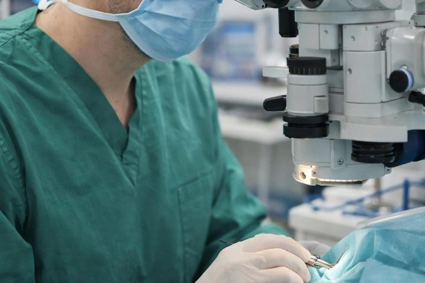
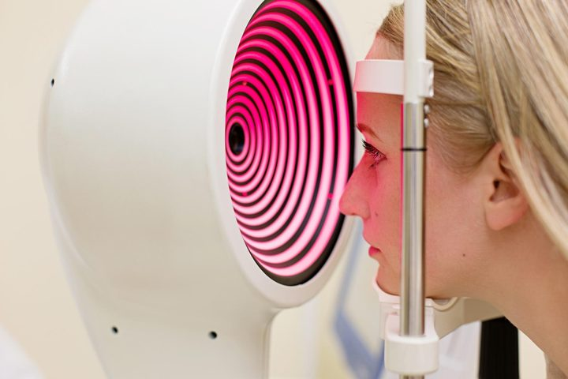

Mutkien kautta löytynyt tasapaino
Tie silmälääkäriksi ei ollut suora: ensin pitkä ura yleislääkärinä, sisätaudeilla ja radiologialla, ennen kuin tutkimustyössä huomattu käden taito vei kohti kirurgiaa.
Erityisosaaminen
Kaihi- ja linssikirurgia, taittovirhekorjaukset sekä glaukooman diagnostiikka ja hoito.

Kaihi- ja linssikirurgia
Kaihileikkaukset ja linssileikkaukset, myös palvelusetelillä toteutettuna.
Taittovirhekorjaukset
Näönkorjausleikkaukset ajantasaisin menetelmin, tilanteen mukaan valiten.
Glaukooma
Diagnostiikka ja hoito, taustalla tutkimustyötä HYKS:ssä.
Työskentelytapa
SPH — työskentelytapa“Parasta tyydytystä saan asiakaskohtaamisista — siitä, että pystyn oikeasti kohtaamaan ihmisen: ymmärtämään, miksi hän on tullut silmälääkäriin, ja auttamaan häntä näkemään paremmin.”Arvi-Matti Kuusniemi
Kirurgiaa Helsingin ja Espoon silmäsairaaloissa, vastaanottoa lisäksi Lohjalla ja Nummelalla.

Ajanvaraus ja asiakaspalvelu Silmäaseman kautta. Kielet: FI · SV · EN.
Potilaiden kokemuksia
Täyden kympin arvoinen kokemus! Aivan ihana henkilökunta, hoitajat ja silmäkirurgi.
Asiakaspalvelu ja sujuva asiointi, ammattitaitoiset henkilöt ja loistava lopputulos.
Lähde: Arvi-Matti Kuusniemen asiantuntijaprofiili, Silmäasema.